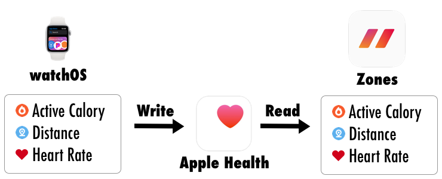
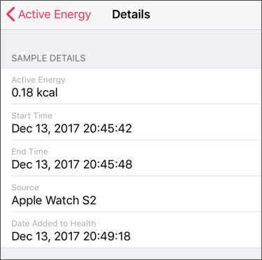

The active calorie is calculated by Apple Watch and registered in Apple Health.

For the Zones app to collect your active calories, you need permission of Apple Health.
Check the Permissions of Apple Health.
After starting workout, it may take about 1 minute to calculate the first active calorie.
Normally, registration to health care will be done in about 6 seconds.
But sometimes registration may be delayed and collection may not be possible during workout measurement.
In that case, it will show "--" (no value) or it will be less value.
You can re-collect calories on the workout editing screen.
Please refer to Wrong Total Active Calories or Distance.
You can check details of actually registered sample data on Apple's "Health" app.

In the above case, the data is from 20: 45: 42 to 20: 45: 48, but the addition to health care is 20: 49: 18 after 3 minutes.
If it was a workout within 3 minutes, this information could not be collected.
Because Apple Watch (watchOS) is doing this registration, there is a possibility to improve by watchOS version upgrade.
(It does not depend on the Zones app)